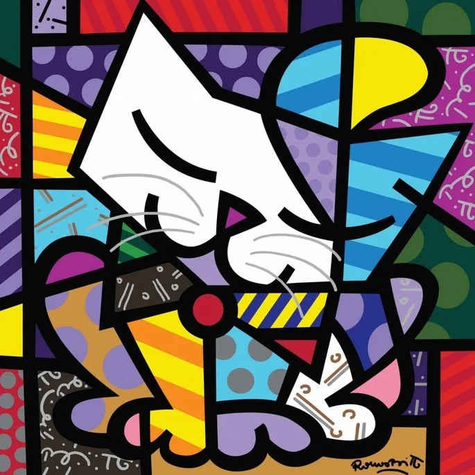

Cordel
O cordel é uma forma literária, tem sua forma rimada, e compostas por relatos orais. Teve sua popularização nas regiões norte e nordeste do Brasil
Arte Bidimensional
A arte bidimensional é a que possue apenas as 2 principais dimensões: Largura e Altura.
Arte Tridimensional
A arte tridimensional é qualquer arte que possua as 3 dimensões, altura largura e profundidade, como esculturas, arquitetura e modelagem.
As dimensões de mais simples compreensão
- Largura
- Altura
- Profundidade
- Tempo